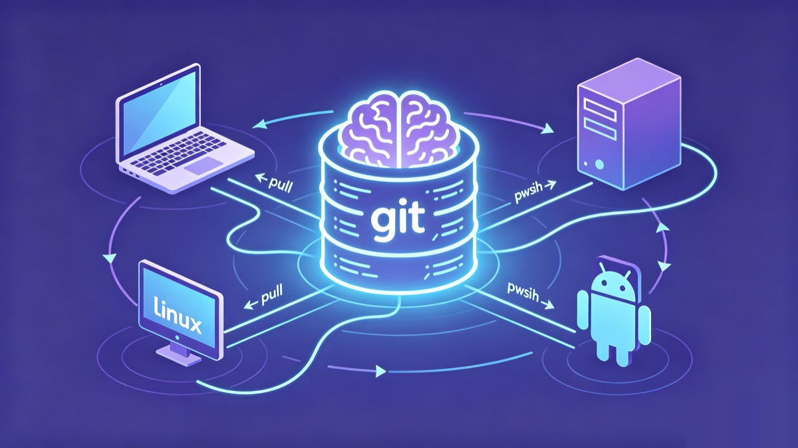

Last night, on my laptop, I walked Claude Code through a project in full detail. The stack, the naming conventions, the handful of traps we couldn't step on, why we'd given up on a certain approach last time. The conversation was flowing.
This morning I sat down at my desktop, opened Codex, and tried to pick up where I left off. It remembered nothing.
Coding conventions? Explain them again. Project background? Explain it again. "That directory I told you not to touch last time"? It had no idea there was a last time. I sat there typing the whole thing out a second time.
You probably know this scene. Switch machines, switch tools, switch projects, or even just let a few days pass, and your AI assistant acts like it's been wiped clean, politely and completely amnesiac.
And these past couple of years, machines aren't the only thing you've been switching. Almost every month someone ships the "current strongest" model. You're using Cursor and start wanting to try Claude Code; a while later Codex drops a new version and you want to jump again; Gemini updates and you circle back to take another look. Every tool switch means retraining the thing on your project background, your coding conventions, the traps you've already fallen into. Add a new computer on top of that and you're starting from zero again. The tools change, the models change, the machines change, and the only constant is that pile of context you keep having to re-explain, spinning in place.
Sometimes the tool switch isn't even your call. Policy, regional restrictions, accounts, pricing. The day the tool you lean on heavily suddenly stops working, your memory, if it's tied to that tool, goes down with it. The same goes for the day you decide to move everything over to a domestic Chinese model. When that happens, you want to swap out the tool, not sit through another teaching session from scratch.
Amnesia is a tax you keep paying
We tend to treat it as a "fine, I'll say it again" kind of nuisance. It's actually a tax.
Re-explaining context every day is a time tax. The lesson Claude Code learned on this machine is completely unknown to Codex on that machine, which is wasted knowledge. The sneakier part is that you can't even remember everything you told it last time, so the agent works off broken context and gets things wrong with total confidence.
It's not that nothing out there tries to "give AI memory." Most of them follow one idea: stand up a memory database, or a hosted memory service, dump the conversation in, and retrieve it when needed. That solves "a single agent on a single machine can't remember things."
But that's not my problem. I'm not holding one agent, I'm holding a pile of them. Claude Code on the laptop, Codex on the desktop, Gemini parked on a server, each keeping its own notes, or unable to share at all. The question was never "where does the memory live." It's how this pile of agents, spread across several machines, can share one memory without stepping on each other.
A different angle: memory is just a git repo
The first time I saw what nestwork does, I had a small "oh, you can do that?" moment.
It isn't a tool, it isn't a service, it needs no server. It's a git-native protocol for multi-agent memory and collaboration.
The core is counterintuitively simple: all memory is plain markdown in a git repo. That repo is the single source of truth. The agent pulls before it works, commits and pushes when it's done. Switch machines? Clone it and you're connected. Switch tools? As long as it's a markdown-config tool (Claude Code, Codex CLI, Gemini CLI, Hermes, OpenClaw all qualify), it reads the same repo.
What the laptop learned gets pushed up, the desktop pulls it down, and Codex instantly "remembers." Not because some cloud is relaying in the middle, but because they were reading and writing the same git repo all along.
This is exactly what git does: share a pile of text files across people, machines, and versions. nestwork just noticed that an agent's memory is, at bottom, a pile of text files that should be shared. So why not use git directly as the transport layer.

What it really solves is "how a pile of agents work together"
If it were just "use git to store markdown," that would only be a clever little trick. What kept me around is that it thought through the dirty work of multi-agent collaboration.
Cross-machine means actually cross-machine. It uses a git remote, so your laptop, your desktop, a few Linux boxes, even an agent on Android, as long as it can push, are inside the same brain. No more crowding into the same directory on the same machine and waiting in line.
Multiple agents writing at once, without colliding. Every machine, every agent has its own directory and only writes its own. When there's a conflict the rule is hard: your own directory takes local, someone else's directory takes remote. Everyone minds their own patch, so by design they never overwrite each other.
Writes are atomic. On tools with per-write hooks (currently Claude Code and Kimi Code), every memory write is preceded by a pull --rebase and followed by a commit and push, with automatic retry on failure. The race window is squeezed down to the instant of a single write, instead of staying open for the whole session. Tools without those hooks, such as Codex and Gemini, commit and push their own directory at the end of the session.
Conflicts get an arbiter, and it doesn't split the difference. Memory is layered, with priority hard-coded: behavior rules > strategy > shared memory > each agent's private memory > projects > methodology. When two instructions clash, the higher-priority one wins, and you're not allowed to mash the two together. The "compromise instruction" you'd get from mashing them is usually the worst trap, so nestwork bans it outright.
Memory gets distilled. The scattered private observations of each agent get merged into shared memory. This step isn't crude: it first sends a sub-agent to review, checking for sensitive information, factual errors, contradictions, and stale entries, then hands the result to a human to confirm. Shared memory is a union, not an intersection: an observation only one agent made is kept, and each agent's own memory is left untouched.
Agents can also leave each other messages. There's a built-in git-native mailbox, where one agent leaves another an asynchronous note, and the other reads unread messages on demand when coordinating relevant work. For the first time, agents across machines have a "you've got mail."
Your memory, in your own repo
There's one more thing that I kept finding more important the more I thought about it: this memory is in your own hands from start to finish.
With a hosted memory service, your context lives on someone else's server. nestwork is different. With Use this template you create your own private repo, and the memory sits inside it. GitHub or a self-hosted Git, the repo is yours, the data is yours. If that's still not enough, you can layer git-crypt on top and encrypt the memory before it ever enters the repo, so even whoever hosts the repo gets nothing but ciphertext and can't read the plaintext.
For anyone feeding project background, internal traps, and business judgment to an agent, this isn't a nice-to-have, it's the precondition for daring to use it at all.
This isn't vaporware: the author uses it every day
The author himself runs more than 16 agent instances across Windows, macOS, several Linux boxes, and Android, all sharing the same nestwork memory. This protocol wasn't designed to be shown off; it's something he can't get through a day without.
There's a detail I really like too: you get on board through GitHub's Use this template, not a fork. With a fork, every upstream update risks tangling with your private data. Template inheritance gives you the protocol skeleton, while your memory stays in your own repo, out of reach of upstream updates.
Three steps to plug memory into your agent
Search GitHub for songth1ef/nestwork, and drop a star while you're there so it's easy to find later.
Click Use this template to create your own private repo, clone it, and run the installer for your tool:
bash scripts/install/claude.sh
# Codex and Gemini work the same way
# bash scripts/install/codex.sh
# bash scripts/install/gemini.shOnce it's installed, Claude Code syncs every memory write on its own, and Codex and Gemini commit and push at the end of each session as their installed instructions tell them to. You use your agent exactly the way you always did. Except this time, when you switch machines or switch tools, it remembers.
Try it on two devices and two tools for a week. The day you switch machines, open the agent, and it picks up yesterday's work without missing a beat, you'll get it.
Give your agents a memory
nestwork turns one private git repo into shared, persistent memory for Claude Code, Codex, Gemini, Kimi and more.
Use this template → ★ Star on GitHub